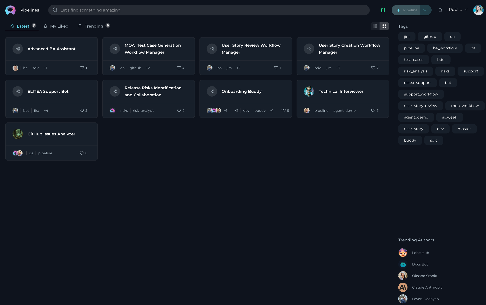
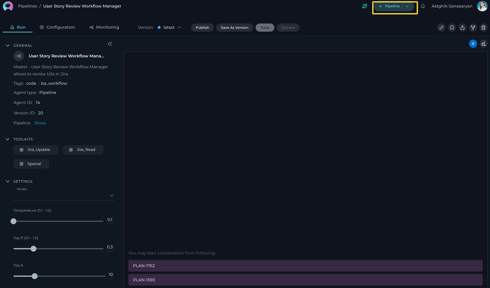
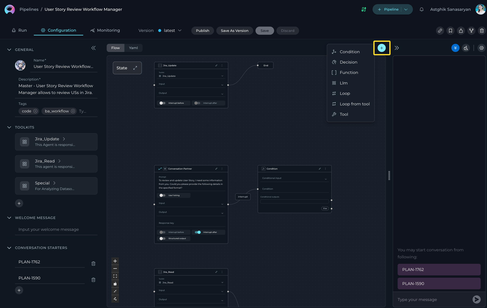
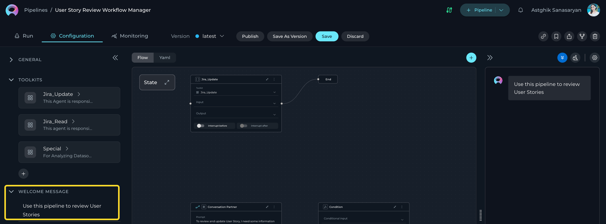
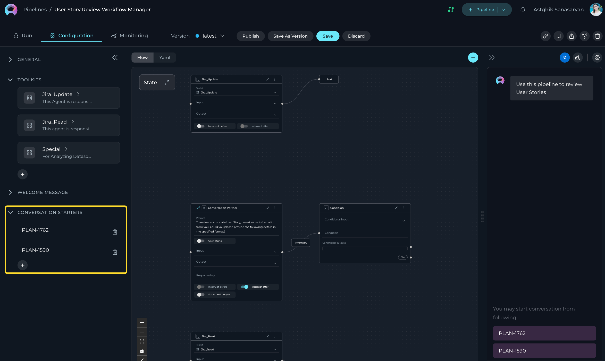
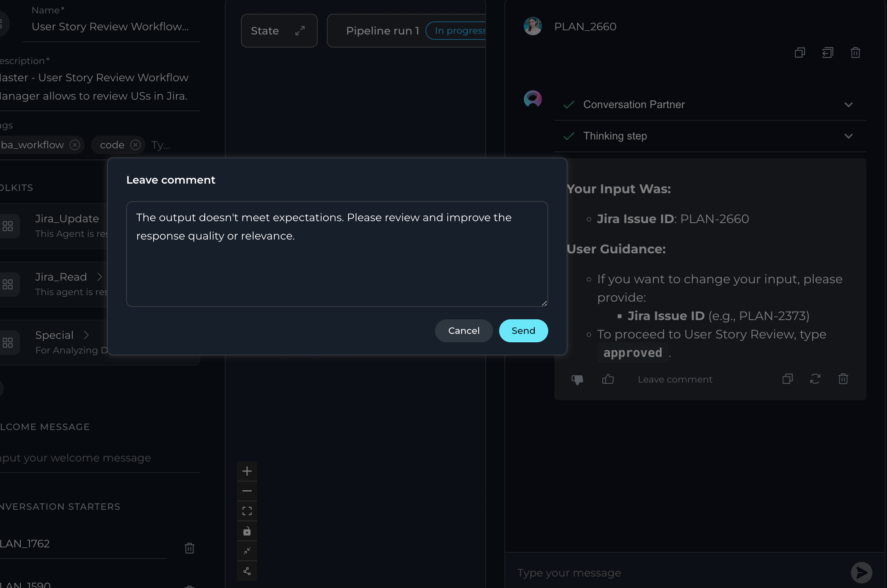
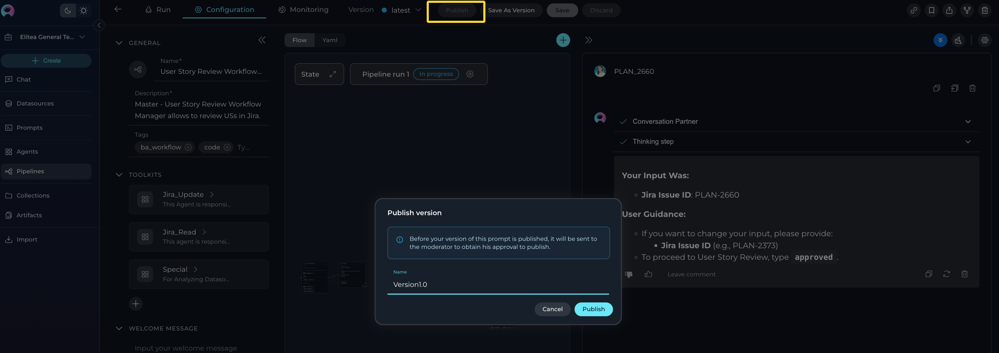

Pipeline
Introduction
Pipelines in ELITEA provide a powerful way to automate workflows by visually designing and executing sequences of states and actions. This feature is ideal for managing complex processes, integrating toolkits, and ensuring seamless data flow across various tasks.

What are ELITEA Pipelines?
ELITEA Pipelines are customizable workflows that you can create within the ELITEA interface to automate complex processes. Each pipeline is designed to handle specific tasks or sequences of tasks by connecting various nodes such as conditions, decisions, loops, and tool integrations. Pipelines enable seamless interaction with external services, toolkits, and data sources, allowing users to design workflows that automate tasks like data processing, decision-making, and integration with tools like Jira, GitHub, or Salesforce. The flexibility of ELITEA Pipelines makes them powerful tools for streamlining operations and reducing manual effort.
Purpose of ELITEA Pipelines
The primary purpose of ELITEA Pipelines is to provide a structured and efficient way to automate workflows for diverse use cases. Unlike manual task execution, pipelines are designed to handle repetitive, multi-step, or intricate processes that require coordination between various tools and data sources. This is particularly beneficial in scenarios where tasks involve conditional logic, iterative operations, or integration with multiple external systems. By automating these workflows, ELITEA Pipelines help reduce errors, save time, and increase productivity.
How do Pipelines Work?
Creating a Pipeline involves defining a sequence of nodes, each representing a specific action, decision, or condition. These nodes can include operations like looping through data, making decisions based on conditions, or interacting with external toolkits. Users can visually design the workflow using the Flow Designer or configure it programmatically using the YAML Editor for advanced customization. Once configured, the pipeline executes the defined steps autonomously, leveraging integrated toolkits and external services to complete tasks. This allows users to automate complex workflows, adapt to dynamic conditions, and achieve their goals with minimal manual intervention.
Key Features of ELITEA Pipelines
- Automation: ELITEA Pipelines enable seamless automation of workflows by connecting states and actions, reducing manual effort and streamlining complex processes.
- Flexibility: Pipelines can be customized to handle a wide range of tasks, from simple linear workflows to intricate multi-step processes, adapting to diverse use cases.
- Integration: By incorporating toolkits, datasources, and external APIs, pipelines can integrate various resources and services, ensuring efficient execution of tasks.
- Visualization: The Flow Designer provides an intuitive visual interface for designing workflows, making it easy to map out and manage even the most complex processes.
- Monitoring: Pipelines include robust monitoring capabilities, allowing users to track performance, analyze execution metrics, and troubleshoot issues in real-time.
By leveraging ELITEA Pipelines, users can automate and optimize their workflows, ensuring efficiency and scalability while maintaining full control over their processes. This empowers users to focus on higher-level strategic tasks, driving innovation and productivity within the ELITEA platform.
Creating a Pipeline
To set up a new Pipeline: 1. Click the + Pipeline button located at the top right corner. 2. Fill out the Name and Description fields. 3. Optionally, add tags by typing a tag name or selecting from pre-existing tags in the Tags input box. 4. Integrate Toolkits to enhance the pipeline's functionality by connecting it to external services or internal tools. 5. Optionally, add and configure: - Welcome Message: Define a welcome message to guide users interacting with the pipeline. - Conversation Starters: Add predefined commands or prompts to initiate interactions with the pipeline. 6. Click Save.

When configuring Pipelines, you can further personalize their profiles by adding a custom image along with the Name and Description. This feature allows you to create a unique, visually distinct identity for each Pipeline, making them easier to recognize and manage.
To add an image:
- Click the Pen Icon next to the image placeholder. Clicking this icon will open the image upload interface.
- Click the Upload a Custom Image icon to upload a custom image from your local system to personalize the Pipeline's profile.
- Use Default Images from a set of default images provided by the platform.

Flow Designer:
- Use the Flow tab to visually design your pipeline by connecting various nodes, such as Condition, Decision, Function, LLM, Loop, Loop from Tool, and Tool.

- Add new nodes by clicking the + icon and selecting the desired node type from the dropdown menu.

- Use the End node to define the completion of the pipeline.
- Drag and drop connections between nodes to establish the workflow's logic and transitions.
- Zoom in or out and adjust the view for better navigation and management of complex workflows.
Best Practices for Using Nodes
- Plan Your Workflow: Before adding nodes, outline the desired workflow to ensure a clear and logical structure.
- Use Descriptive Names: Name each node clearly to make the pipeline easier to understand and maintain.
- Test Iteratively: Test nodes and connections incrementally to identify and resolve issues early in the design process.
- Optimize Loops: Use loops efficiently to avoid unnecessary iterations and improve pipeline performance.
For detailed information on each node type and its use cases, refer to the Nodes in ELITEA Pipelines Guide.
By following best practices and leveraging the available nodes, you can design efficient and scalable workflows tailored to your specific needs.
YAML Editor:
- Switch to the YAML tab to configure the pipeline using code for advanced customization.
- Define complex workflows, conditions, and logic that may not be easily achievable through the visual Flow Designer.
- Use the YAML editor to fine-tune node configurations, set advanced parameters, and integrate custom logic.
- Validate your YAML syntax to ensure the pipeline runs smoothly without errors.

- This is particularly useful for users who prefer a code-first approach, need to implement intricate logic, or want to replicate and modify existing pipelines efficiently.
WELCOME MESSAGE
The Welcome Message feature allows you to provide additional context for pipelines, prompts, datasources, and agents. Currently, the Welcome Message is sent to LLM along with other instructions.
How to Add the Welcome Message:
- Add the Welcome Message: Type the welcome message text in the input field.
- Save the Configuration: After entering the desired text, ensure to save the changes to the agent. This action makes the configured welcome message available to user in the Chat section.

Using the Welcome Message:
Go to the Chat section of the Pipeline. Here, you will see the configured Welcome Message. It will provide additional notification, instruction to the user.
Examples of Welcome Message:
- "Use this pipeline for generating manual test cases"
- "Don't forget to double-check the generated test cases"
CONVERSATION STARTERS
The Conversation Starter feature enables you to configure and add predefined text that can be used to initiate a conversation when executing a pipeline. This feature is particularly useful for setting a consistent starting point for interactions facilitated by the pipeline.
How to Add a Conversation Starter:
- Access the Configuration Panel: Navigate to the Conversation Starter section.
- Add a Conversation Starter: Click the
+icon to open the text input field where you can type the text you wish to use as a conversation starter. - Save the Configuration: After entering the desired text, ensure to save the changes to the pipeline. This action makes the configured conversation starter available for use.

Using a Conversation Starter:
Initiate a Conversation: Go to the Chat section of the pipeline. Here, you will find the saved conversation starters listed. Click on the desired starter to automatically populate the chat input and execute the agent.
Examples of Conversation Starters:
- "Generate test cases for provided Acceptance Criteria."
- "Generate automatic test cases for selected [Test_Case_ID]."
By setting up conversation starters, you streamline the process of initiating specific tasks or queries, making your interactions with the pipeline more efficient and standardized.
Additional Interaction Features:
- Auto scroll to bottom: This option can be toggled on or off to automatically scroll to the bottom of the output as it is being generated. This feature is helpful during long outputs to keep the most recent content visible.
- Full Screen Mode: Increase the size of the output window for better visibility and focus. This mode can be activated to expand the output interface to the full screen.
Post-Output Actions:
- Continue the Dialogue: To keep the conversation going, simply type your next question or command in the chat box and click the Send icon.
- Copy the Output: Click the Copy to Clipboard icon to copy the generated text for use elsewhere.
- Regenerate Response: If the output isn't satisfactory, click the Regenerate icon to prompt the Gen AI to produce a new response.
- Delete Output: To remove the current output from the chat, click the Delete icon.
- Purge Chat History: For a fresh start or to clear sensitive data, click the Clean icon to erase the chat history.

- Like or Dislike the Output:
- Click the Like icon if the output meets your expectations.
- Click the Dislike icon if the output is unsatisfactory. Upon disliking, you will have the option to leave a comment explaining why the output did not meet your expectations. This feedback helps improve the system's performance and relevance.

Managing Pipeline Versions: Save, Create Versions, Publish and Manage
To optimally manage your pipeline, understanding how to save and create versions is crucial. Follow these guidelines to efficiently save your pipeline, create versions, and manage them.
How to Save a Pipeline:
- To save your work on a Pipeline for the first time, simply click the Save button. This action creates what's known as the "latest" version of your prompt.
- You can continue to modify your agent and save the changes to the "latest" version at any time by clicking the Save button again. If you wish to discard any changes made, you have the option to click the Discard button before saving.
Remember: The "latest" version represents the initial version you create. You can keep updating this version with your changes by saving them, without the need to create additional versions for your agent.
How to Create New Versions:
For instances where you need to create and manage different iterations of your Pipeline:
- Initiate a New Version: Start by clicking the Save As Version button.
- Name Your Version: When saving your work, provide a version name that clearly identifies the iteration or changes made. Click Save to confirm your entry.
Best Practices for Version Naming:
- Length: Keep the version name concise, not exceeding 48 characters. This ensures readability and compatibility across various systems.
- Characters: Avoid using special characters such as spaces (" "), underscores ("_"), and others that might cause parsing or recognition issues in certain environments.
- Clarity: Choose names that clearly and succinctly describe the version's purpose or the changes it introduces, facilitating easier tracking and management of different versions.
Upon creating a new version of the Pipeline, several options become available to you:
- Delete: Remove this version of the Pipleine if it’s no longer needed.
- Execute: Run this specific version of the Pipleine to see how it performs.
- Navigate Versions: Use the Version dropdown list to switch between and select different versions of the Pipleine. This allows for easy comparison and management of various iterations.
By following these steps, you can effectively manage the lifecycle and iterations of your Pipleines, ensuring that each version is appropriately saved, published, and utilized as per your requirements.
Publishing a Pipeline Version
The Publish functionality allows you to make a specific version of your pipeline available for public use after moderator approval. This ensures that only reviewed and approved versions are accessible to users.
How to Publish a Pipeline Version:
- Navigate to the top menu and click the Publish button. A dialog box will appear prompting you to confirm the publishing process.
- Provide a Version Name. Enter a meaningful name for the version you want to publish. This helps in identifying the version during the review process.
- Submit for Approval:
- Once you click Publish, the version will be sent to a moderator for review.
- The moderator will evaluate the pipeline version and either approve or reject the request.

What Happens After Publishing:
- If Approved:
- The pipeline version will be made publicly available for use.
-
Users will be able to access and execute the published version.
-
If Rejected:
- The moderator may provide feedback on why the version was not approved.
- You can make the necessary changes and resubmit the version for approval.
By following these steps, you can effectively manage the lifecycle and iterations of your pipelines, ensuring that each version is appropriately saved, published, and utilized as per your requirements.
Best Practices for Publishing:
- Test Thoroughly: Ensure the pipeline is fully functional and free of errors before submitting it for publishing.
- Provide Clear Version Names: Use descriptive names to make it easier for moderators and users to understand the purpose of the version.
- Incorporate Feedback: If a version is rejected, carefully review the feedback provided by the moderator and address the issues before resubmitting.
By following these steps, you can ensure a smooth publishing process and make your pipeline versions available for broader use.
Monitoring Pipelines
The Monitoring menu allows you to track the performance and activity of your Pipleine in real-time. By accessing this feature, you can view detailed logs, analyze execution metrics, and identify potential issues or bottlenecks in your agent's workflows. For detailed instructions on how to use the Monitoring feature, please refer to the Monitoring User Guide
Best Practices for Pipelines
- Keep It Modular: Break down complex workflows into smaller, manageable states for better readability and maintainability.
- Use Tags: Organize pipelines with tags to make them easier to find and manage.
- Test Iteratively: Test each state or action individually before executing the entire pipeline to ensure accuracy.
- Monitor Regularly: Use the Monitoring feature to track performance and identify areas for improvement.